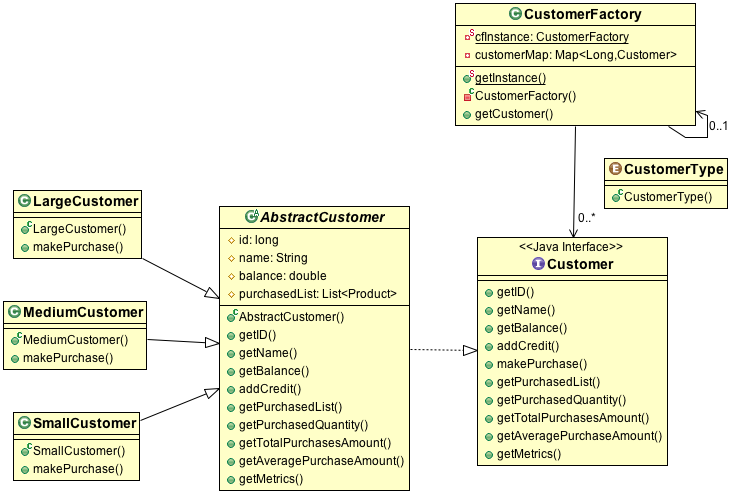

Lance's Github
Lance's Github
https://github.com/lanconi/Software-Design-Pattern-The-Factory-Pattern
Or, you may just want to download the 13 individual java source code files by clicking on the following links:
Customer.java
AbstractCustomer.java
SmallCustomer.java
MediumCustomer.java
LargeCustomer.java
CustomerFactory.java
CustomerType.java
ProductCreationException.java
PurchaseAmountExceededException.java
MalformedCustomerException.java
BadPurchaseException.java
Product.java
CustomerDemo.java
In the Java ecosystem, there is an namespace schema called package, which recommends grouping code files
together that are similar in nature.
The package naming convention follows a reverse DNS pattern, so if our company is called EP, then our 3
packages for this tutorial are named as follows ...
com.ep.customer
com.ep.exception
com.ep.product
Your customers fall into 3 categories:
Small, Medium, and Large (depending upon the number of products they buy each business cycle).
You must create a software framework that keeps track of how many Customers you have, each of their balances, and how many Products each Customer purchases.
The framework you are creating is used internally by your company, and is not accessible by the end customers.
Another assignment would be to provide a front end for Customers to buy the product, but we will not cover that here.
In the Software world, there exists an extensive set of Design Patterns that can be used to help implement similarly recurring types of problems.
In our scenario, the Design Pattern known as Factory Pattern is perfect and now we can directly translate most of the scenario described above into a class diagram showing the hierarchy and dependencies of our classes and interfaces.

An application gets an instance of CustomerFactory (which is also a Singleton in this tutorial).
Then the application requests CustomerFactory to create an instance of any one of three concrete classes we have defined:
LargeCustomer
MediumCustomer
SmallCustomer
The type of concrete class created will depend upon the variables passed into the request given to CustomerFactory.
In java code, it looks like this (we are creating 3 different types of Customers and initializing them each with a unique id and a balance) ...
CustomerFactory customerFactory = CustomerFactory.getInstance();
Customer customerA = customerFactory.getCustomer(CustomerType.SMALL, 1459292, 25_000.00d);
Customer customerB = customerFactory.getCustomer(CustomerType.MEDIUM, 2245945, 60_000.00d);
Customer customerC = customerFactory.getCustomer(CustomerType.LARGE, 324772, 210_000.00d);
You will notice that the explicit returned reference to each concreate class is of type Customer and not the concrete class.
This is because a class type may be referenced by the type of its parent without an explicit cast, due to the Object Oriented principle of inheritance.
The purpose of the Factory Pattern is to hide the details of how the concrete classes are created and make it easier to create objects.
Now that we have some references to Customer objects, let's explore the Customer interface ...
Here we can see the methods which are "exposed", allowing a developer to access the
state of a Customer.
public abstract long getID();
public abstract String getName();
public abstract double getBalance();
public abstract void addCredit(double credit);
public abstract void makePurchase( Product product )
throws PurchaseAmountExceededException, BadPurchaseException;
public abstract List
But, Customer is only an interface, and we have to go deeper into the
Object Oriented Hierarchy in order to get to the implementation of a Customer.
Any abstract or concrete class implementing Customer, will have to define all of the methods shown above
To declare that an abstract or concreate class needs to implement the methods of an interface, we use the implements keyword, or the extends keyword if we are extending a class, as shown below ...
public Interface Customer
public abstract class AbstractCustomer implements Customer
public class SmallCustomer extends AbstractCustomer
public class MediumCustomer extends AbstractCustomer
public class LargeCustomer extends AbstractCustomer
Therefore we have established an inheritance hierarchy, and the following can be said ...
AbstractCustomer is a Customer
SmallCustomer is an AbstractCustomer is a Customer
MediumCustomer is an AbstractCustomer is a Customer
LargeCustomer is an AbstractCustomer is a Customer
Essentially, each of the 3 concrete classes are a Customer and Customer is like a handle that carries a slightly different payload, that could potentially be very different internally, but can be accessed in the identical manner through the interface declaration.
First, we establish a Product in the system using our Product class.
The Product we establish will be an ARM Microprocessor that costs $50.00 and the vendor is called "Micro Sim Corp."
Product armMicroprocessor =
new Product("ARM Microprocessor", 50.00d, "Micro Sim Corp.", ZonedDateTime.now());
Now we have customerA make a purchase by calling the makePurchase() method from the Customer interface.
Keep in mind that customerA is of type SmallCustomer, and the internal details of SmallCustomer may
be very different than MediumCustomer or LargeCustomer.
try {
customerA.makePurchase(armMicroprocessor);
} catch( PurchaseAmountExceededException paec) {
// take appropriate action
} catch( BadPurchaseException bpe ) {
// take appropriate action
}
Why do we need the try catch statements?
If you look at the Customer interface, where the makePurchase() method is defined, you will note that
makePurchase declares that it can throw two Exceptions.
Declaration from Customer.java ...
public abstract void makePurchase( Product product )
throws PurchaseAmountExceededException, BadPurchaseException;
System.out.println( customerA.getMetrics() );
Every Product purchase is recorded and
metrics or other business or financial analytics could be incorporated into this mechanism.
If your task was to modify the Customer interface by providing a way to add money to the balance of your Customer, then this is what you must do ...
public abstract void addBalance(double amount);
@Override
public void addBalance(double amount) {
if( amount > 0 ) {
balance += amount;
}
}
Note that we safeguarded our addBalance method so that it is only possible to add positive amounts
to the Customer's balance! This is because the only way to subtract from the Customer's balance should
be when they are making a purchase.
For example, what if we wanted to "tax" SmallCustomer by 10% every time money was added to the balance?
Then we would Override the addBalance method only in SmallCustomer as shown ..
Go to SmallCustomer.java and add the following lines of code:
@Override
public void addBalance(double amount) {
if( amount > 0 ) {
balance += (amount * .9d);
}
}
Expand the implementation of our Customer interface by adding a new class to accomodate very large customers.
This new class will be called: VeryLargeCustomer.
Hint: create a new java file named VeryLargeCustomer.java and paste this code into it, and then you can fill out the rest ..
package com.ep.customer;
import java.text.DecimalFormat;
import com.ep.exception.BadPurchaseException;
import com.ep.exception.PurchaseAmountExceededException;
import com.ep.exception.MalformedCustomerException;
import com.ep.product.Product;
public class VeryLargeCustomer extends AbstractCustomer {
// TODO - define Constructor and all necessary methods ...
}
Also, you must add an extra ENUM value in CustomerType.java as shown ...
public enum CustomerType {
SMALL,
MEDIUM,
LARGE,
VERYLARGE // <- Add this line!
}
Now, to create a Customer of type VeryLargeCustomer, you would simply write code like this in your application ...
CustomerFactory customerFactory = CustomerFactory.getInstance();
Customer customerD = customerFactory.getCustomer(CustomerType.VERYLARGE, 340999, 500_000.00d);
We will define a method in CustomerFactory that will use behavior parameterization.
In CustomerFactor.java, we inserted this method definition.
public List
Now that we have our behavior parameterization method all set up, we begin using it in
our application, CustomerDemo.java
Let's say, we want to get a List of all the Customers who's balance is each less than 1,000.
In CustomerDemo.java we pass in a lambda as an argument to the our method and assign the return value to a List named lowBalanceCustomers ...
List
And, if the method returns a List that is not empty, then we can print out the names
of all the Customers, like this ...
if( lowBalanceCustomers.size() > 0 ) {
System.out.println("Low Balance Customers ...");
for( Customer customer: lowBalanceCustomers ) {
System.out.println( customer.getName());
}
}
Lance's Github